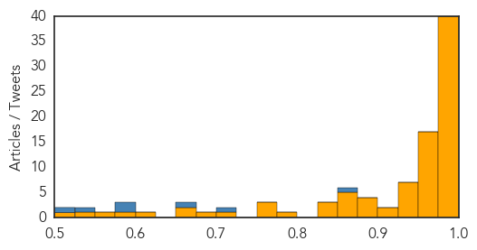

Ebola
30-Day Web Trend
0 alerts, 0 warnings

30-Day Twitter Trend
0 alerts, 0 warnings

Article Locations

Article Confidences
Top Articles:
- 1.000
- EBOLA: Northampton General Hospital is treating a woman with suspected Ebola - how it would deal with a real case
- 1.000
- UK Ebola case confirmed but risk remains low
- 1.000
- Flu, norovirus, Ebola, oh my!
- 1.000
- Ebola survivor Dr. Rick Sacra soon to return to Liberia hot zone
- 1.000
- Ebola cases dropping in all three countries, but hot spots remain
- 1.000
- Liberia, Sierra Leone, Guinea making Ebola strides
- 0.999
- American Soldier’s Corpse Examined For Ebola
- 0.999
- As anxiety wanes, state still on alert for Ebola spread
- 0.999
- Ebola Cases On The Decline In West Africa But One Expert Says The Health System In Place Remains Far From Ideal
- 0.999
- How Bats Can Help And Hurt You
- 0.999
- C.D.C. Chief ‘Confident’ on Ebola
- 0.998
- Liberia Progresses in Fight Against Ebola
- 0.998
- Officials Confirm Death of US Soldier Self-Monitoring for Ebola
- 0.997
- The Royal Gazette:Bermuda Wellness
- 0.997
- Northampton General Hospital confirms suspected Ebola patient
- 0.997
- Colorado Health Officials Follow Strict CDC Ebola Guidelines « CBS Denver
- 0.996
- Ebola Training Continues at the Center for Domestic Preparedness
- 0.995
- Ebola treatment centre for pregnant women opens
- 0.995
- China sends off 4th Ebola aid shipment with 232 medical workers
- 0.995
- Woman Tests Negative For Ebola In Northampton
- 0.993
- Ebola Response Provides Key Lessons for Risk Communications
- 0.992
- Liberia's Ebola Epidemic Could End by Summer, Study Predicts
- 0.991
- Pace of Ebola Epidemic Slows, But Unevenly
- 0.991
- Liberia’s Ebola epidemic could be eliminated by June, researchers say
- 0.991
- UPDATE 1-British hospital says has suspected Ebola case
- 0.990
- Dont Attempt Ebola Treatment -Traditional Healers Urged
- 0.985
- Important Questions and a Few Easy Steps to Stop an American Ebola Outbreak
- 0.983
- CDC calls for French-speaking medical personnel to combat Ebola in Guinea
- 0.982
- Minnesota's bill for Ebola preparations tops $1 million, state expert says
- 0.982
- Ebola strategic plan in the pipeline
- 0.982
- No Sign Of Ebola For CDC Lab Worker Feared Exposed Weeks Ago
- 0.980
- GOP shows solidarity during pre-session luncheon
- 0.980
- Baltimore mayor seeks more federal aid to combat police misconduct
- 0.980
- Judge keeps Bishop Heather Cook's bail at $2.5M
- 0.980
- Teachers union takes to airwaves on school funding
- 0.980
- Food fundraiser Market Day to lay off 26 in Jessup
- 0.980
- Sierra Leone: Ebola Emergency Weekly Situation Report No. 12, 5 - 11 January 2015 - Sierra Leone
- 0.980
- Ebola: doctors from Liberia to help “brothers" - Sierra Leone
- 0.976
- Dead Fort Hood soldier tests negative for Ebola
- 0.975
- Ebola Vaccine Trials in West Africa Slated This Month, According to WHO [News Update] Jan. 2015
- 0.974
- Return to Ebola-affected West Africa
- 0.972
- Sierra Leone district remains Ebola-free for 44 days
- 0.971
- Ebola patient may go home
- 0.971
- Could the Ebola epidemic end this year?
- 0.969
- South Africa: Zuma arrives in Angola for talks with Dos Santos
- 0.968
- CDC Director "Confident" That Global Ebola Cases Can be Reduced to Zero
- 0.962
- Fair Access Medicines and OncoSynergy Partner to Test Experimental Ebola Drug in West Africa
- 0.961
- English hospital investigating suspected Ebola case
- 0.954
- Doctors test woman for Ebola at Northampton General Hospital
- 0.951
- Dissident Iranian Director's Film To Premiere In Berlin
Showing top 50 articles...
Top Tweets:
- 0.864
- Dr. Peter Piot co-discoverer of Ebola tells us what went wrong that led to the Ebola outbreak in West Africa. http://t.co/y1TPrRp5f7
- 0.718
- Fewer young kids among Ebola cases in Liberia. 0-14 yr olds are 10% of cases in Liberia 16% in Guinea 17.5% in SL. http://t.co/fmzCIrJpat
- 0.660
- RT: CDC Director - 'zero cases' of Ebola in West Africa possible: http://t.co/bGD4C44ykW AfricaAgainstEbola africastopebola …
- 0.593
- Good news: Liberia has reported only 48 new Ebola cases in the past 21 days. Bad news: Vaccine trial there will take forever at that rate.
- 0.585
- HackAgainstEbola A Dakar des hackers s’en prennent au virus Ebola http://t.co/Vc8vwKaVdX
- 0.528
- Ebola survivors in Sierra Leone key in training health providers http://t.co/4G20BWkc4c reports via TackleEbola
- 0.511
- Tragic story of Sierra Leone's Dr. Humarr Khan who could have been the 1st person to get ZMapp but died of Ebola. https://t.co/Ml6HcGvOD3
Influenza
30-Day Web Trend
1 alerts, 0 warnings

30-Day Twitter Trend
0 alerts, 0 warnings

Article Locations


Article Confidences

Top Articles:
- 0.997
- Flu shot lowers risk of rare side-effect in most seasons for most people
- 0.997
- Knox Health Department offers guidance for flu sufferers
- 0.994
- Flu shot reduces risk of rare Guillain-Barré Syndrome in most cases, study finds
- 0.993
- Death Toll Rises As Four More Die In Allegheny
- 0.991
- Flu Widespread in Rhode Island, Vaccine 'Bad Match' for the...
- 0.990
- Mississippi Public Broadcasting
- 0.989
- Northwest Prepares for Flu Season
- 0.989
- Influenza making its presence known in southwest Nebraska
- 0.988
- Flu keeps central Wisconsin clinics busy
- 0.982
- Health officials urge sick people to stay home as flu epidemic h
- 0.975
- Los Angeles County reports spot shortages of flu meds
- 0.969
- Granite Staters urged to get vaccinated against flu
- 0.960
- State health commissioner wants more Hoosiers to get the flu shot
- 0.954
- S. Korea confirms case of bird flu – The Korea Times
- 0.938
- Wisconsin 2-year-old dies from flu
- 0.918
- Universal flu vaccine on the horizon, thanks to antibodies
- 0.918
- Universal vaccine against flu may be on the horizon, say researchers
- 0.892
- Avian Flu Scan for Jan 14, 2015
- 0.889
- No new avian flu cases reported in province
- 0.871
- Have the Flu? Health Officials Urge You to Stay Home
- 0.865
- Flu epidemic prompts Valley hospitals to declare internal disast
- 0.801
- Poultry industry optimistic and on the mend
- 0.794
- Pseudorabies Outbreak Kills Hunting Dogs in Sevier County
- 0.785
- Mayo Clinic expert explains difference between severe sepsis and septic shock
- 0.605
- Corner crash
- 0.586
- China Joins List of Countries Restricting U.S. Poultry Imports Due to Avian Flu
Top Tweets:
-
No tweets found for Jan 14, 2015